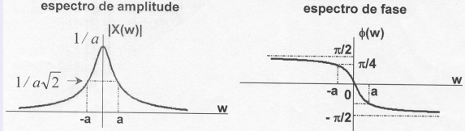
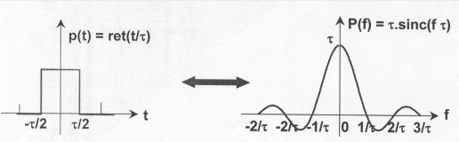
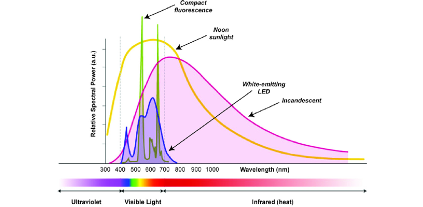
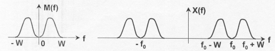
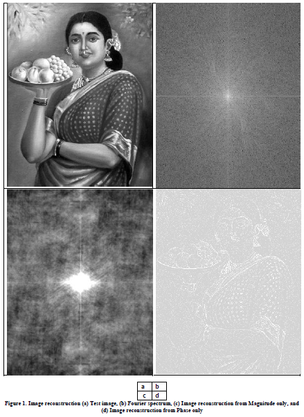

A transformada de Fourier#
Transf. Fourier a partir da Transf. Laplace: \(X(j\omega) = X(s) \big |_{s = j\omega}\)#
\(\Rightarrow \ X(j\omega)=\int_{-\infty}^{\infty}x(t)e^{-j\omega t}dt \)#
\(\Rightarrow \ x(t)=\frac{1}{2\pi}\int_{-\infty}^{\infty}X(j\omega)e^{j\omega t}d\omega \)#
Considerando \(y(t) = h(t)*x(t)\)#
\(H(s)\) é função de transferência
\(H(j\omega)\) ou \(H(\omega)\) é resposta de frequência
Espectro de \(x(t)\)#
\(X(j\omega)\) é complexo logo pode ser escrito como: \(X(j\omega) = |X(j\omega)|e^{j\phi(j\omega)}\)
Gráfico de \(\omega \times |X(j\omega)| \Rightarrow\) espectro de amplitude
Gráfico de \(\omega \times \phi(j\omega) \Rightarrow\) espectro de fase
espectro é uma representação de uma grandeza em função da frequência ou comprimento de onda
\(\omega \in \;\; ]-\infty, \infty[\)
Condições de existência (Dirichlet)#
Sinal com energia finita, ou, para que a transformada de Fourier exista, o sinal \(x(t)\) deve satisfazer as seguintes condições:
Número finito de descontinuidades;
Número finito de máximos e mínimos;
Absolutamente somável.
Transformada de Fourier de um sinal exponencial#

Transformada de Fourier do pulso retangular com largura \(\tau\)#
$ p(t) = ret\left(\frac{t}{\tau}\right) \leftrightarrow P(f) = \tau.sinc(f\tau) $

\(P(j\omega) = \int_{-\tau/2}^{\tau/2} e^{-j\omega t}dt = -\frac{1}{j\omega}e^{-j\omega t} \big |_{-\tau/2}^{\tau/2}\)#
\(= -\frac{1}{j\omega}(e^{-j\omega \tau/2} - e^{-j\omega\tau/2})= \frac{1}{j\omega}2j\sin(\omega \tau/2) \times \frac{\tau}{\tau}\)#
Types of Broadband Connections#
https://www.fcc.gov/general/types-broadband-connections
ADSL (Asymmetric Digital Subscriber Line) - típico de 64 kbit/s e podem atingir 8 Mbit/s dentro de 300 metros da central onde está instalado o sistema#
cable modem - velocidades típicas de 1.5 Mbps ou mais#
fiber modem - velocidades típicas de dezenas ou centenas de Mbps.#
Função Sinc(x) é definida para \(x ≠ 0\)#
1. função sinc(.) não-nomalizada (área = \(\pi\))#
\({\displaystyle \operatorname {sinc}(x) ={\frac {\sin x}{x}}.} \)
2. função sinc(.) normalizada (área = 1)#
\({\displaystyle \operatorname {sinc}(x)={\frac {\sin(\pi x)}{\pi x}}.}\)
import matplotlib.pyplot as plt
import numpy as np
#plt.rcParams['text.usetex'] = True
f1 = lambda x: np.sin(x)/x
f2 = lambda x: np.sin(np.pi*x)/(np.pi*x)
x = np.arange(-25, 25, 0.1)
plt.plot(x, f1(x), x, f2(x))
plt.grid()
plt.legend(['sen(x)/x', 'sen(pi x)/pi x'])
<matplotlib.legend.Legend at 0x7f7b1d6e0e50>
Importante: A TF da função sinc(t) normalizada é a rect(f):#
\(\displaystyle \int _{-\infty }^{\infty }\operatorname {sinc} (t)\,e^{-i2\pi ft}\,dt=\operatorname {rect} (f)\)#
Propriedades da Transformada de Fourier#
Linearidade#
Seja:
Considere dois sinais \(x_1(t)\) e \(x_2(t)\):
Propriedades da Transformada de Fourier#
Deslocamento no tempo#
O módulo permanece o mesmo (somente a fase é modificada).
Importante#
\(\tau(\omega) = -\frac{d}{d\omega}\angle H(j\omega)\)
sistemas com fase ‘linear’ possuem atraso constante. No sistema com resposta de frequência \(H(j\omega)\) todas as frequências tem o mesmo atraso.
Paridade#
Em análise matemática, uma função complexa é Hermitiana se: \({\displaystyle x^{*}(t)=x(-t)}\)#
As duas afirmações podem ser feitas:
a função \(x\) é Real se e somente se sua Transformada de Fourier é hermitiana
a função \(x\) é Hermitiana se somente se a sua Transformada de Fourier é real .
Se \(x(t)\) é real, então:
\( X(-\omega) = X^*(\omega) \)
O módulo é uma função par e a fase é uma função impar.
Propriedades da Transformada de Fourier#
Integração e diferenciação#
Propriedade muito utilizada em sistema LTI.
Exemplo: Função degrau unitário.
Propriedades da Transformada de Fourier#
Escalonamento#
Compressão no tempo \(\rightarrow\) expansão na frequência.
Dualidade#
Se \(x(t) \leftrightarrow X(\omega)\) então \(X(t) \leftrightarrow 2\pi x(-\omega)\)
exemplo#
\(rect(t/\tau) \stackrel{TF}{\leftrightarrow} \tau sinc(\tau f) \)
\(\tau sinc(\tau t) \stackrel{TF}{\leftrightarrow} \tau rect(-\tau f) = \tau rect(\tau f) \)
Propriedades da Transformada de Fourier#
Teorema de Parseval#
Energia no tempo = energia na frequência
O termo \(|X(\omega)|^2\) é chamado do densidade espectral de potência média ou simplesmente de espectro de potência de \(x(t)\).
Exemplo da distribição espectral de energia

Área sob \(X(\omega)\) $\( X(0) = \int_{-\infty}^{\infty}x(t)dt \)$#
Área sob \(x(t)\) $\( x(0) = \frac{1}{2\pi}\int_{-\infty}^{\infty}X(\omega)d\omega \)$#
Propriedades da Transformada de Fourier#
Convolução#
Multiplicação#
Propriedades da Transformada de Fourier#
Deslocamento na frequência (teorema da modulação)#
Exemplo:

Propriedade muito utilizada em telecomunicações (deslocamento espectral).
Propriedades da Transformada de Fourier#
Diagrama de Bode#
Representação polar da transformada de Fourier
Módulo: Informações sobre as amplitudes das exponenciais complexas.
Diagrama de bode \(\rightarrow\) gráfico do ganho e da fase contra a frequência.
histórico: https://en.wikipedia.org/wiki/Bode_plot
https://en.wikipedia.org/wiki/Hendrik_Wade_Bode
\(x(t) \to \fbox{h(t)} \to y(t)\)
\(y(t) = x(t) * h(t)\) ou \(Y(\omega) = X(\omega)H(\omega)\)
\(|Y(\omega)| = |X(\omega)||H(\omega)| \stackrel{\log}{\to} |Y(\omega)|_{dB} = |X(\omega)|_{dB}+|H(\omega)|_{dB}\)
\(\angle Y(\omega) = \angle X(\omega) + \angle H(\omega)\)
\(\angle H(\omega) = \sum \angle \{\overrightarrow{j\omega} - \overrightarrow{z_i}\} - \sum \angle \{\overrightarrow{j\omega} - \overrightarrow{p_i}\} \)
\(z_i\) são os zeros e \(p_i\) são os polos da função de transferência, \(H(s)\)
Amplitude x Fase#
# https://physics.stackexchange.com/questions/121459/image-reconstructionphase-vs-magnitude
